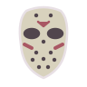
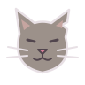

SVGアイコン一覧
全30種類。大きい表示と小さい表示を並べています。カードを押すとSVG単体で開きます。
赤ちゃん #F3D8B8
人物 #D6AF93
輪郭 #E8E0E5
誰に · 10種類

ジェイソン
subject-jason.svg
おばあちゃん
subject-grandma.svg
河童
subject-kappa.svg
宇宙人
subject-alien.svg

野良猫
subject-cat.svg
友達
subject-friends.svg
赤ちゃん
subject-baby.svg
サンタクロース
subject-santa.svg
佐藤
subject-sato.svg
幽霊
subject-ghost.svg
何をされて · 15種類
殴られて
action-punched.svg
食べられて
action-eaten.svg
抱きしめられて
action-hugged.svg
キスされて
action-kissed.svg
褒められて
action-praised.svg
無視されて
action-ignored.svg
説教されて
action-scolded.svg
笑われて
action-laughed.svg
愛されすぎて
action-overloved.svg
間違えて召喚されて
action-summoned.svg
改造されて
action-modified.svg
弟子入りさせられて
action-apprenticed.svg
くすぐられて
action-tickled.svg
ネタバレされて
action-spoiled.svg
解雇されて
action-fired.svg
どうなる · 5種類
死亡
outcome-death.svg
老衰
outcome-old-age.svg
成仏
outcome-ascended.svg
爆散
outcome-exploded.svg
なぜか大丈夫だった
outcome-survived.svg
ゲームへ戻る